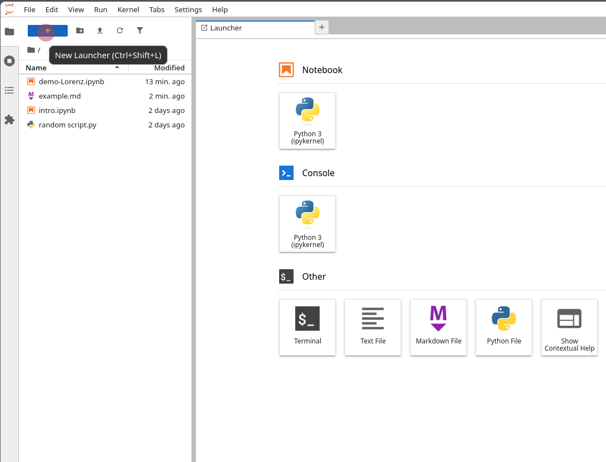
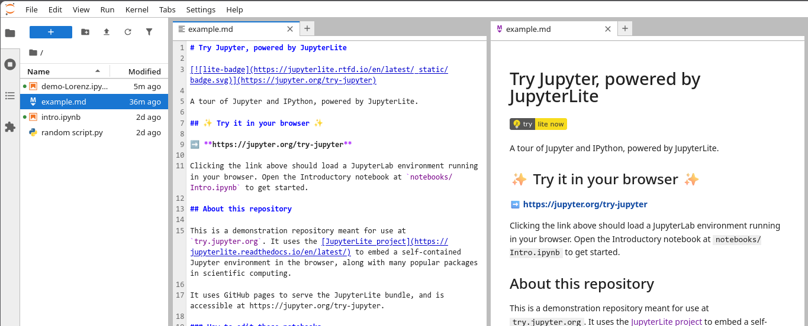
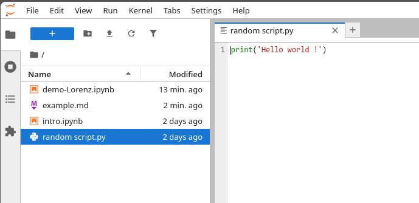
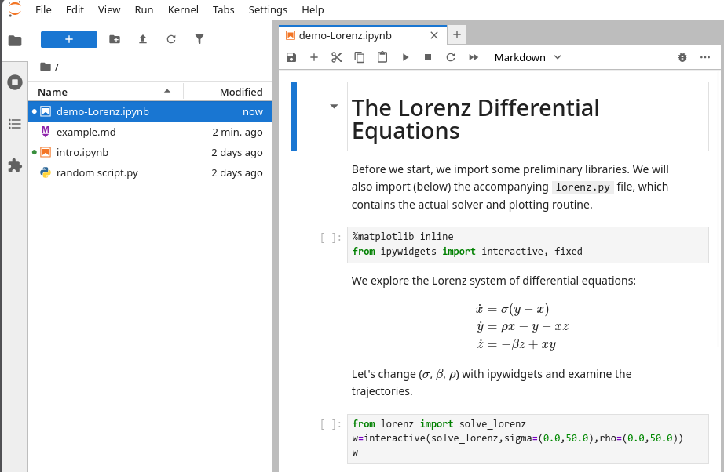

prix = 12.5
quantite = 3
prix * quantiteIntroduction à Python · L3 Économie-Gestion
numpy (calcul), pandas (tableaux de données), matplotlib (graphiques), statsmodels (économétrie), scipy (optimisation).Note
Ce cours va de la découverte de la programmation jusqu’à l’utilisation de python pour l’analyse de données… en 21h. On n’apprend pas tout Python, l’objectif est de devenir autonome pour savoir apprendre, c’est à dire savoir aller chercher l’information.
A l’issue du cours, l’étudiant.e doit être capable de :
NumPy ;pandas ;matplotlib ;scipystatsmodels ;🧰🛠️ Approche Learn by doing
→ très peu de “cours magistral”
Séance type :
| Sem. | Durée | Séance |
|---|---|---|
| S40 | 2h30 | 1. Prise en main |
| S41 | 2h | 2. Variables, types, structures de données |
| S42 | 2h30 | 3. Strutures de contrôle, boucles |
| S43 | 2h | 4. NumPy |
| S44 | — | Toussaint |
| S45 | 2h | 5. pandas, premiers pas (1h) + Évaluation 1 (1h, à l’écrit) |
| S46 | 2h | 6. Importer, inspecter, nettoyer |
| S47 | 2h | 7. Transformer |
| S48 | 2h | 8. Statistiques descriptives et visualisation |
| S49 | 2h | 9. Optimisation et régression |
| S50 | 2h | (à préciser selon modalités d’évaluation finale) |
À la fin de la séance vous savez :
.py ;intro-python et y lancer un Terminal ;Si vous ne l’avez pas déjà faite, ce sera la 1ère étape après cette présentation.
Vous allez suivre des instructions pas-à-pas, qui vont :
intro-python sur l’ordinateurEnsuite, vous démarrerez le TD1.
C’est un Environnement de développement (IDE, en anglais).
Il se lance depuis un Terminal, et s’ouvre dans votre navigateur web.
Depuis JupyerLab, on peut :
👨🏫 Démo !
Vous le ferez une fois que vous aurez installé python.
C’est à faire à chaque début de TD (cf. instructions du TD).
👉 Il faut savoir où est votre dossier de travail
Ce PC > /votre nom d'utilisateur/ > intro-python/votre dossier utilisateur/ > intro-python+) : créer un notebook, un fichier texte, un terminal, une console Python.
Fichier de type *.md.
Open with... > Markdown Preview)
Fichier de type *.py

Fichier de type *.ipynb
Il est organisé en cellules :

🤔 Exécuter une cellule dans un notebook
Cellule de code
Exécuter : Shift + Entrée. Le résultat de la dernière ligne s’affiche.
🤔 Raccourcis indispensables dans un notebook
| Action | Raccourci |
|---|---|
| Naviguer d’une cellule à l’autre | Flèches ↑ et ↓ |
| Exécuter la cellule et passer à la suivante | Shift + Entrée |
| Passer la cellule en Markdown / en code | M / Y |
| Ajouter une cellule au-dessus (above) / en dessous (below) | A / B |
| Supprimer une cellule | D, D |
Important : pour réaliser ces actions, il faut d’abord appuyer sur la touche Échap pour sortir de l’édition de la cellule.
Pour voir tous les raccourcis clavier : Help > Show keyboard shortcuts...
Depuis Moodle, accédez au site du cours, et suivez les instructions du TD1.
Introduction à Python — L3 Économie-Gestion